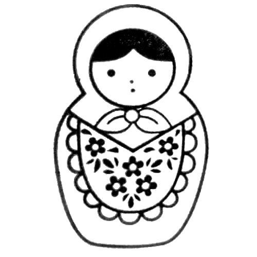
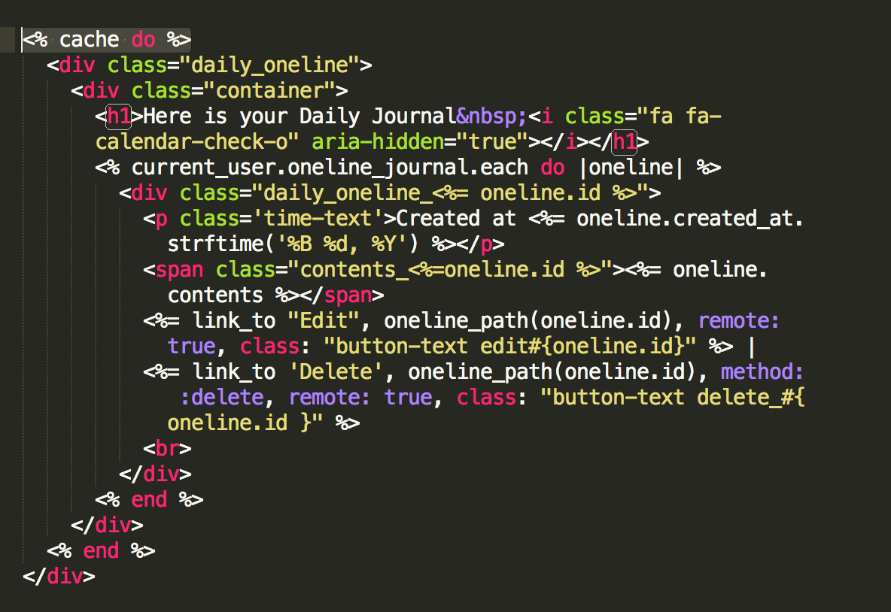

Rails Caching
Oct 31, 2016
Rails Caching, what are they do and how to strengthen your performance?
I've working with Rails caching - Russian Doll caching for specific, before. There are several technics we can explore about rails cachiing and this is a basic step.
One thing to notice is that caching, by default, is only enabled in your production environment. So if your database is not updating correctly during development phase, do not suspect this is caused by cachiing e.g. working with ajax.
Page and Action Caching
Page caching is disabled in Rails 4. It is basically allows the request for a generated page to be fulfilled by the webserver. This is super fast but need to be caucious about implementing caching expiration. Page caching is also can't be applied if, for instance, the page require authentication. In this case, Action Caching is the helper! Action caching works like Page Caching except the incoming web request hits the Rails stack so that before filters can be run on it before the cache is served. This allows authentication and other restrictions to be run while still serving the result of the output from a cached copy. Action caching is also disabled in Rails 4.
Fragment Caching / Russian Doll Caching
When different parts of the page need to be cached and expired separately you can use Fragment Caching. Fragment caching is basically wrap up the fragment of the page in the block. It looks like this.
This works great but unless you are using different page, this values will not be updated. Becuase cache is using url as a key to store caching value. So this will be useful for nav bar or any sections that require minimum updates but somewhat heavy load. The problem of the Fragment Caching is that the associated values are not trigger caching expires. Let's see the example.
Russian Doll caching is kind of Fragment caching but for the nested element. As explained in the previous section, a cached file will expire if the value of updated_at changes for a record on which the cached file directly depends. However, this will not expire any cache the frament is nested within.
This looks really complex but it is not. The add_follwer_num_path and remove_follower_num_path will add or remove users to startup. In this case, the caching need to dynamically update not only startup but user count becuase of 'belongs_to' relationship. Simply add 'touch: true' in belongs_to, it allows expiring caching for the object and the parent record as well.
:counter_cache
The :counter_cache option can be used to make finding the number of belonging objects more efficient. This will add column in the containing model so it will effectively retrive counter of the objects.
Of course, for more detailed information about Rail's caching, here is the Rails Guide.